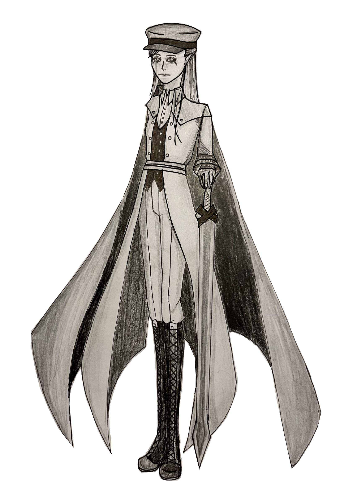

Home
Captain Isidore
Name:
Isidore
Last name:
Deathsinger
Age:
19
Genre:
Fantasy
Species:
Fairy
Details: Of course you would start of strong with the most brutal question...
Yes I was born with wings. I am a fairy after all... Actually I had very special wings since I am the daughter of the fairy queen.
And before you ask why I do not have them now I will tell you right now. Maybe a hundred years ago the humans decided that our truth was dangurous for them. They thought that the ones killing them was us. So from no where they came and to slaugtered us.
As they began their purging of us they discoverd that if they took our wings they could enslave us. So insetad of killing all of us they captuerd us. I was young so they caputerd me and took my wings. I rather not talk about more about it.
Let me guess you want to know how I got the title of captain. It is not a noble title for me. The humans captuerd me, tore my wings staight of my back and then sent me in war against my own kind... I was captured by the captain of the humans and therefore got his title.
